La web se cambia de dos maneras: sobre la propia página, con un clic en el texto o la foto, o desde un panel con formularios. Estas son sus pantallas.
Esto son capturas. El panel y el editor son un programa que se abre en un ordenador (no hace falta internet ni contraseñas); desde ahí se guarda y se publica la web. Por eso aquí se puede ver, pero no usar.
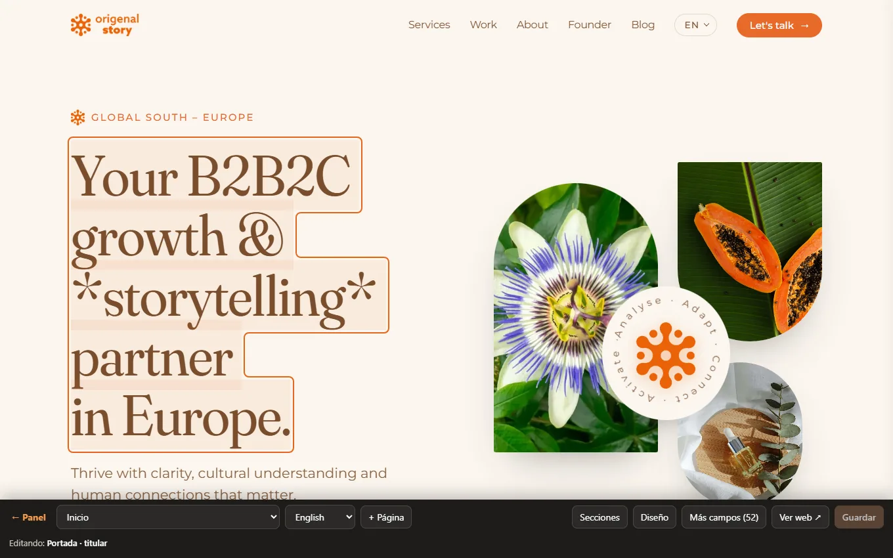
Editor visual: clic en un texto y escribesLa propia web, con una barra abajo. Haces clic en cualquier texto o foto y lo cambias ahí mismo; «Guardar» actualiza la web. Para usar un enlace o un botón en vez de editarlo: Alt + clic.
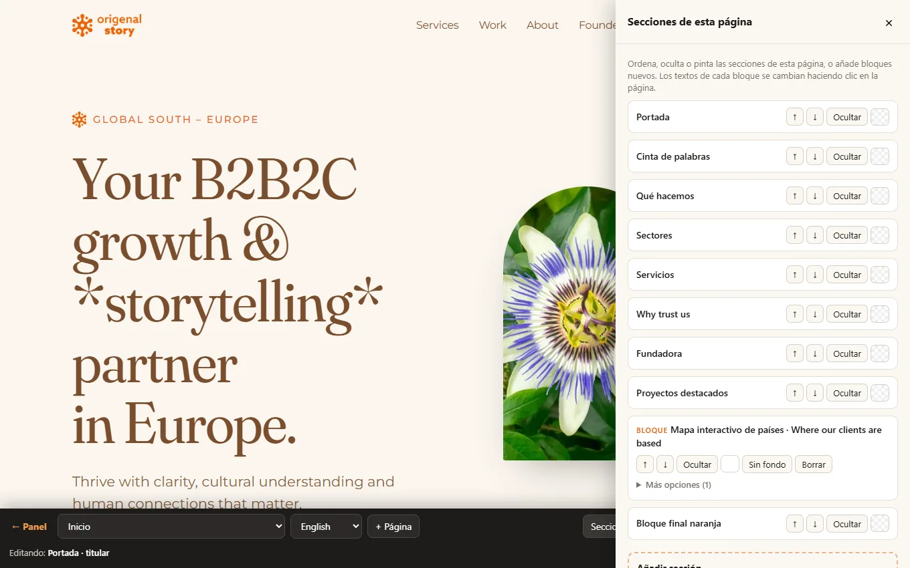
Secciones de cada páginaDesde el editor se ordenan, se ocultan y se añaden bloques (texto, foto, tarjetas, mapa, artículos…) a cualquier página.
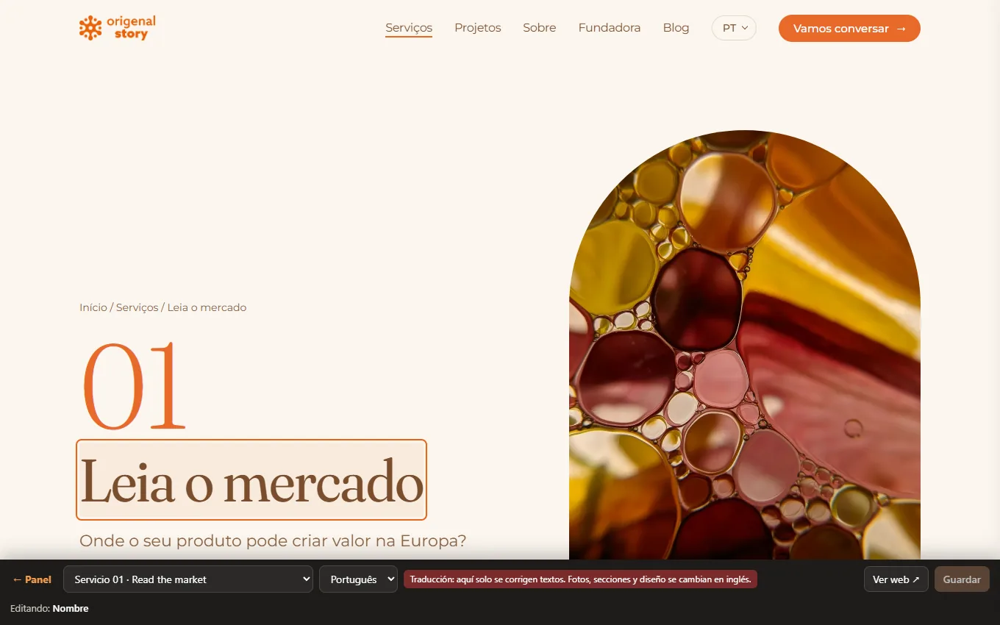
La misma página en otro idiomaCon el desplegable de idioma ves y corriges la traducción al español, portugués o francés con un clic en el texto.
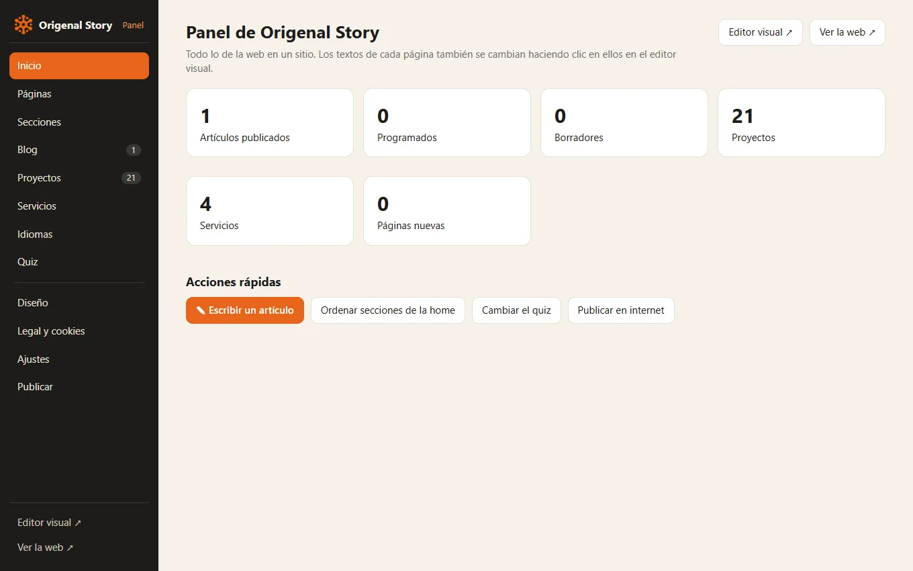
Panel: inicioTodo lo de la web en un sitio, con accesos rápidos.
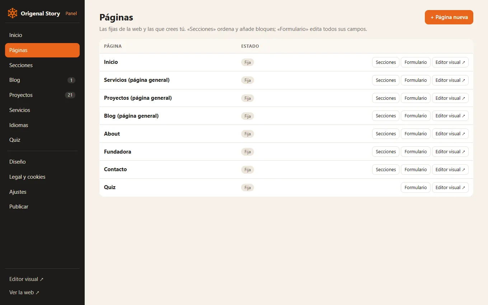
PáginasTodas las páginas, con su formulario y su editor visual. Aquí se crean páginas nuevas.
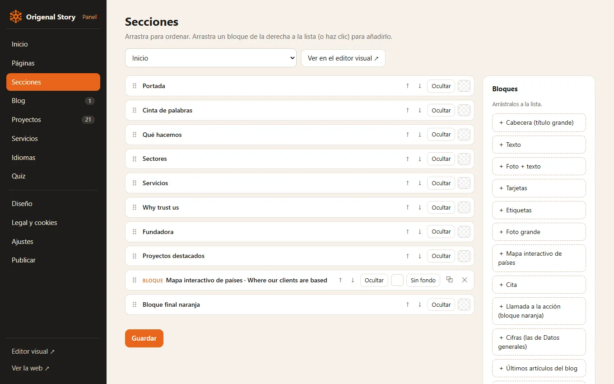
Secciones con arrastrarSe arrastran para ordenarlas; los bloques de la derecha se sueltan en la lista para añadirlos.
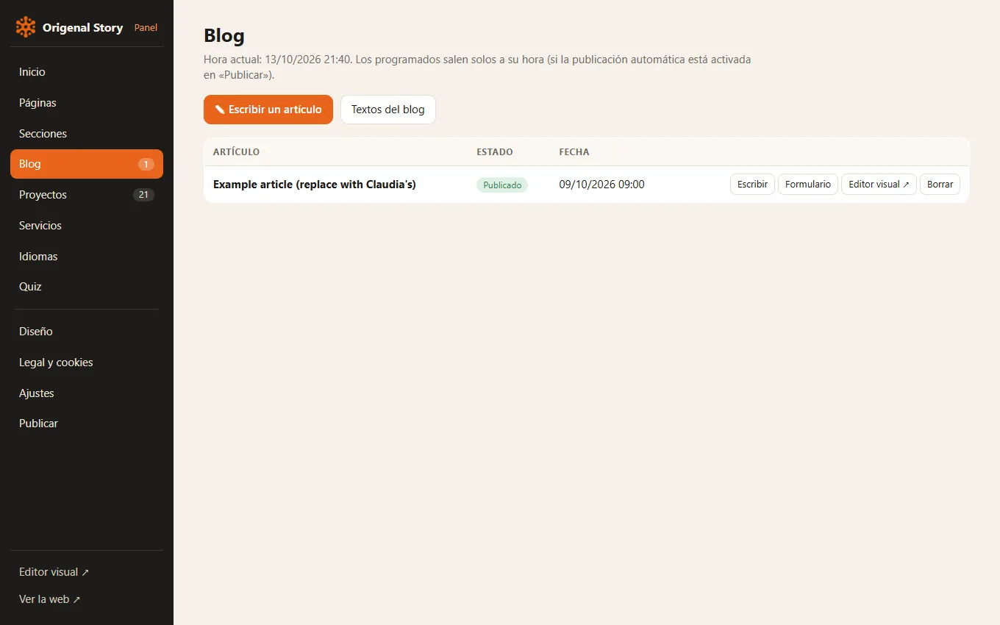
BlogArtículos publicados, programados y borradores. Se escriben rápido y se pueden dejar programados para una fecha.
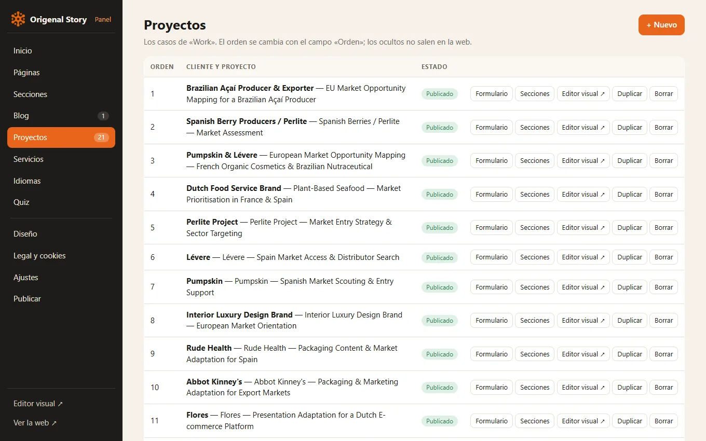
ProyectosLos casos de clientes, con su servicio, su país y su testimonio.
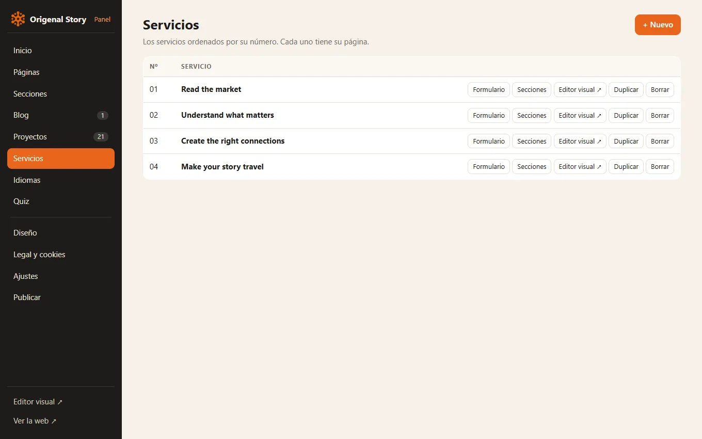
ServiciosLos cuatro servicios, con sus pasos y sus preguntas frecuentes.
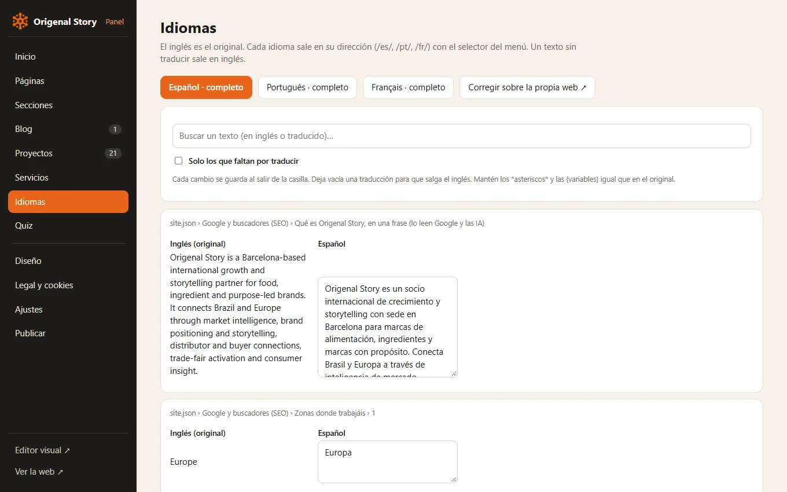
IdiomasCada texto en inglés con su traducción al lado. Buscador y filtro para ver lo que falta por traducir.
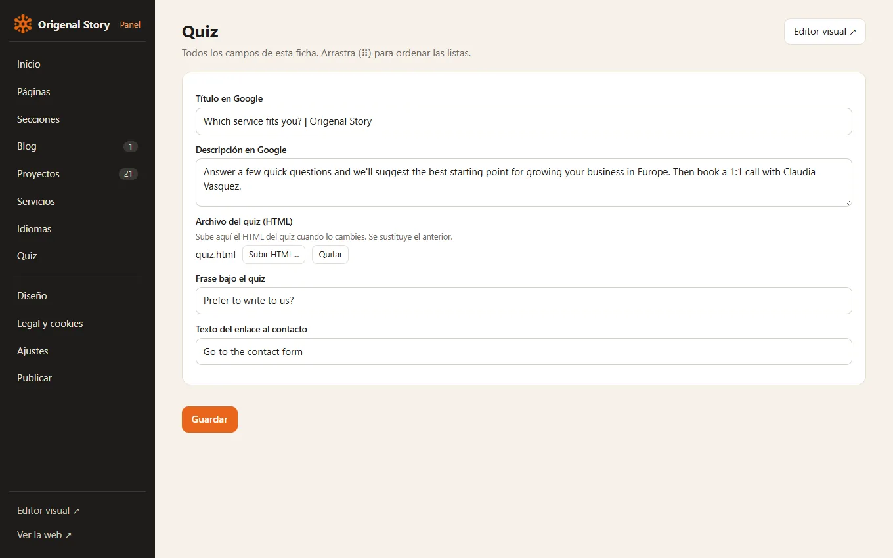
QuizEl quiz es el contacto de la web. Para cambiarlo se sube aquí su archivo.
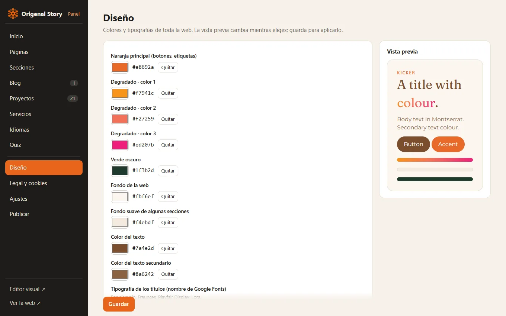
DiseñoColores y tipografías de toda la web, con vista previa.
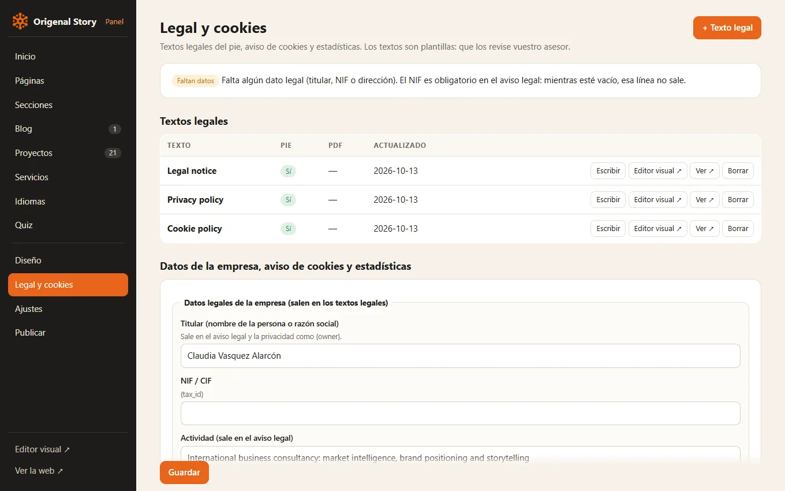
LegalAviso legal, privacidad y cookies, y los datos de la empresa que salen en ellos.
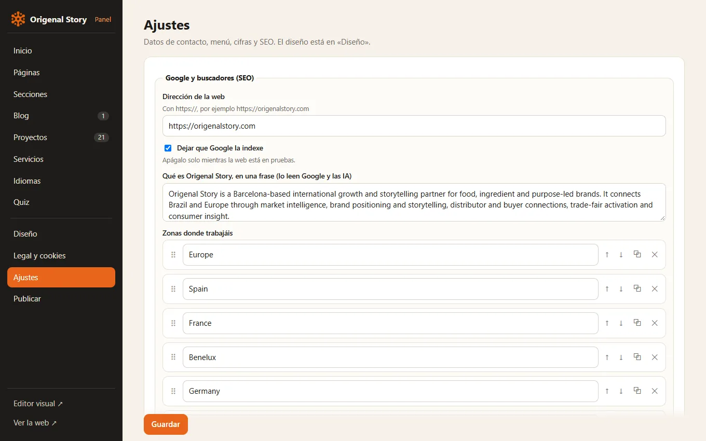
AjustesDatos de contacto, textos del menú y del pie, cifras y datos para Google.
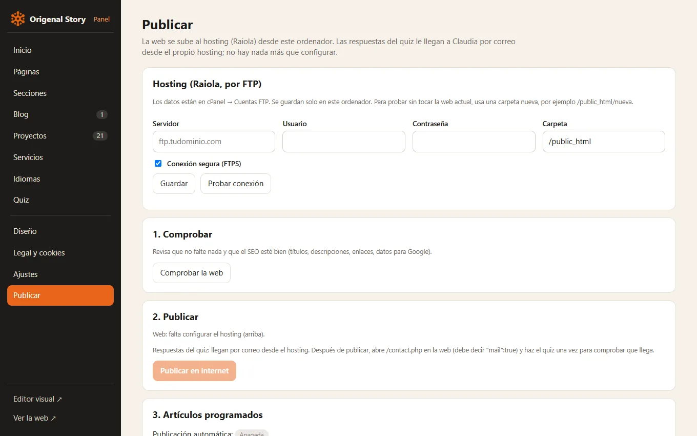
PublicarComprueba la web y la sube al hosting con un botón.